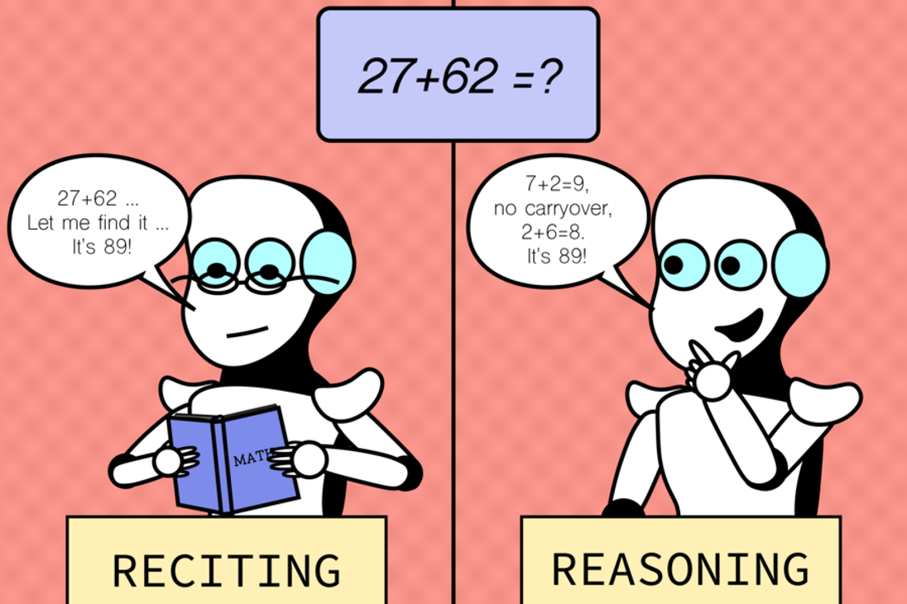
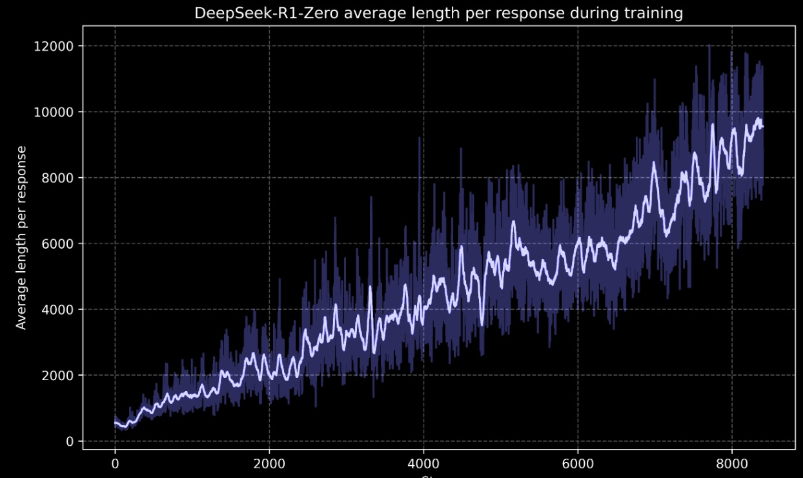

How Language Models Move From Memorization to Deliberative Problem-Solving (Allegedly): Unpacking Strategies and Methods Driving Reasoning in LLMs.
In this blog, we’ll explore how these strategies are implemented, and why some approaches seem to foster genuine reasoning more effectively than others.
Our aim is to explore the field of Reasoning Models and make
the topic approachable in an educational format. We move from the general concepts and ideas behind
these models to the mathematical formulas that ground them, as well as the different frameworks that
implement them and how they perform across benchmarks.
Along the way, readers will gain a good overview of reasoning models, the different methods and
structures they use, their practical applications, and how they perform across benchmarks. By the
end, you should have a clearer picture of both the technical underpinnings and the open questions
that drive ongoing research.
So, are these models really thinking, or are we just thinking that they are? Let’s find out!
Unlocking Reasoning: What Makes RLMs Different?
RLMs Image with Two Speech Bubbles (No False Pointer)

Image: Alex Shipps/MIT CSAIL
This is the key idea behind RLMs:
Moving beyond surface fluency to actual reasoning, where tasks are worked through step-by-step.
Large Language Models (LLMs) are built to tackle general-purpose tasks—answering questions, solving problems, generating ideas, and following instructions. But many standard LLMs often fall short when it comes to true reasoning. Instead of logical analysis or planning, they tend to memorize and interpolate, skipping the deeper steps that lead to genuine understanding.
Reasoning Language Models (RLMs) represent a new direction: they introduce deliberate problem-solving strategies like step-by-step thinking, exploration, and self-verification. Unlike conventional LLMs, RLMs use search-based inference, generating multiple candidate solutions and choosing the best, rather than relying on a single one-pass answer.
Scaling Laws & AIME Chart Side-by-Side
How Scaling Laws Led to Test-Time Compute
Era of Scaling Laws
Progress driven by scale: Accuracy increases with model size, more data, and more training compute.
↓
Hitting a Wall
Scaling hits practical limits: Eventually computational resources and data become scarce, accuracy gains plateau.
↓
Test-Time Compute
Solution: By increasing compute during inference, performance on new data can be boosted at test-time, so without retraining.
Train-Time Compute vs Test-Time Compute
Scaling alone drove major gains over the past decade, but its limits are becoming clear.
Test-time compute offers a complementary approach: models can "think harder" when needed,
improving reasoning and robustness without retraining. This shift intends moving from
brute-force scaling toward more adaptable AI.
Direct vs Reasoning Model Flow
Direct vs Reasoning Model
Instead of mapping inputs directly to outputs, reasoning models break the task into intermediate steps.
These reasoning tokens are intended to make the model’s internal process visible, helping it structure and refine
its reasoning. This approach seemingly improves accuracy on complex problems while keeping the model’s
outputs interpretable.
🤔 But what are these intermediate steps?
And how are RLMs actually achieved?
To answer that, we’ll look at reasoning architectures such as search-based methods, reward models, and decision-tree style reasoning.
Chain of Thought (CoT) Example
One of the first attempts to elicit reasoning in LLMs was related to how to prompt them.
Perhpaps the most well known example of this is Chain of Thought (CoT).
In CoT, we improve the quality of the LLM's answers by prompting them to think their answer step by step.
This simple tricked improved accuracy in a variety of problems and proved that the reasoning capabilities of LLMs might be dormant.
While the techinique improves accuracy and generalizes well over any area, it still has its issues.
CoT is not a scalable technique, as it still relies on the knowledge already existing in the LM.
Here you can compare how a model answers with and without Chain of Thought prompting, as explained in
Kojima et al., 2022
.
Start the conversation below 👇
The first part is for creating the chain of thought itself,
while the second messages ensures a definitive, concise answer.
Supervised Fine-Tuning
However useful CoT is, only being able retrieve the latent capabilities of the model is a hard limit of the technique.
A reasoning model should be able to go beyond its training data, and actually think beyond its preobtained information.
To remedy this, researchers started testing different techniques and algorithms to enhance the reasoning capabilities of LLMs.
Supervised Fine-Tuning (SFT) is a post-training technique where we update
our model so its answers resamble a specific dataset.
This is useful for alignment, which means developing models that specialize
in a specific topic or must follow certain guidelines.
In more mathematical terms, given a set of prompts x,
and their corresponding preferred answers y,
we want our model responses given its current distributions to resamble y.
This can be achieved by updating our parameters based on a loss formula.
We last update our parameters through gradient descent, minimazing the loss. And then our output will resamble more our preferred output.
By training model through SFT on CoT outputs, we can ensure that our LLMs will produce these reasoning steps autonomously,
without the need to prompt them to do so, enhancing their reasoning capabilities.
If you want to see this technique in action, make sure to read the S1 model paper,
which shows the whole process of creating a RLM from scratch,
inlcuding data collection through CoT prompting, SFT as a post-training technique,
and Budget Forcing during inference (or controlling the lenght of the model's answers).
Supervised Fine-Tuning (SFT) Process
High LossUpdate WeightsUpdate WeightsZero Loss
How SFT Works:
Step 1: The model receives a prompt and generates an answer that may not be optimal.
Step 2: The model's output is compared to the preferred/correct answer, creating a loss signal.
Step 3: Through backpropagation, the model's weights are updated to reduce this loss.
Step 4: After many iterations, the model learns to produce outputs closer to the preferred answers.
Reinforcement Learning
Reinforcement learning is a way to train a system by trial and reward.
An agent tries actions, receives a numeric reward, and gradually learns a rule for choosing actions that
lead to higher reward. That rule is called the policy.
In fine tuning for language models, we apply this idea to align outputs with human preferences.
A separate reward model turns human judgments into scores, so we train the reward model first.
In the classic setup known as Reinforcement Learning from Human Feedback,
people compare two answers to the same prompt, the reward model learns to score those answers,
and the policy learns to pick the ones that score higher.
The diagram below shows how feedback trains the reward model and how that model guides the policy during fine tuning.
RLHF Flow Diagram
Reward Model Training Flow
Reward Model Training Data
Training a reward model requires pairs of answers that can be compared. Given the same prompt, annotators decide which answer
is better. The chosen answer becomes the preferred output, while the less helpful one is marked as not preferred.
In this example database in
HuggingFace
the annotators preferred answer y1.
In this example, the prompt "How do I reset my phone password?" produces two candidate answers. Annotators judged that
y1 was a better response. When analysing both answers we can see that in answer y1, underlined in green, there are a series of steps on how to reset a phone password.
The generated answer y2 lists items that might be required but does not explain how to do the task, as we can see underlined in red.
Pairwise loss for the reward model
This is the pairwise loss we use to train the reward model. Start by taking the reward score for the
currently preferred answer \(r(x,y_b)\) and exponentiating it. Using the exponential turns arbitrary
scores into positive quantities and lets the model express how much better one answer is than another.
Next, normalize by the sum of exponentials for both candidates \(y_1\) and \(y_2\). That normalization
forms a two way softmax and yields a probability that the preferred answer is indeed the better one under
the current reward model.
We then take the negative log of that probability. This is the standard maximum likelihood objective:
it is numerically stable, converts products into sums over a dataset, and penalizes confident mistakes
more than small ones. During training we minimize the average of this loss across many labeled comparisons,
which is why the expectation is implied.
Let us look at a numeric example.
Considering the same prompt “How do I reset my phone password?” and answers y1
and y2 as in the example above, you can play with the values that would have been assigned
to each answer by the model and choose your preferred answer in order to better understand the effects
these values have on the learning process of the reward model.
With these settings, the model assigns a probability of 0.8910 to the preferred answer,
which gives a loss of \( -\log p \) equal to 0.0501.
When the two rewards are close, the softmax sits near one half and the loss stays comparatively large, indicating that the model is not very sure.
As the preferred reward grows much larger than the alternative, the probability approaches one, the loss drops toward zero, and the
reward model is saying I am confident this answer is better. If the non preferred answer receives the higher reward, the probability
for the preferred answer becomes small and the loss grows, pushing the model to revise the scores on future updates.
Proximal Policy Optimization (PPO)
As we can see in the graph above, there are four models involved in the PPO algorithm. Two frozen models, the
Reference Model and the Reward Model, were trained beforehand and do not update their weights as part of the PPO algorithm.
In this section we will focus on the Value Model and the Policy Model, both of which are trained simultaneously within PPO.
First, we will explain how the Value Model is trained, then the Policy Model, and finally we will bring everything together in an interactive example.
Value model
The value head answers for a state \(s_t\): how good is this situation.
It predicts the discounted return \(G_t\) with
\(V(s_t)=\mathbb{E}[G_t\mid S_t=s_t]\) where
\(G_t=\sum_{k=0}^{\infty}\gamma^{k}R_{t+1+k}\).
We train it with the small squared error
\(\mathcal{L}_{\text{value}}=\tfrac12\big(V(s_t)-G_t\big)^2\).
Why estimate \(V\)? The value model provides the baseline that turns raw reward into a teaching signal for the policy.
When an observed or predicted reward is higher than \(V(s_t)\), the outcome was better than expected and the advantage
becomes positive; if it is lower, the advantage is negative and the policy should make that behavior less likely.
Here, \(s_t\) is the current state, \(R_{t+k}\) are future rewards, \(0\le\gamma<1\) discounts distant outcomes, and
\(G_t\) is the total discounted return the model is trying to predict.
Let us look at a numeric example.
Use the same phone password path of rewards:
\([0.5,\,0.2,\,0.8,\,0.7,\,1.2]\).
Move the discount and the prediction and we compute
the return \(G_1\), the value loss and a simple advantage
\(\hat A \approx r(x,y)-V(s_1)\) that we will reuse in the PPO block.
Return \(G_1\) = 2.6256 •
Value loss \(\tfrac12(V-G)^2\) = 0.0530 •
Advantage \(\hat A \approx r-V\) = 0.2000
The Discount factor \(\gamma\) controls how much future rewards matter. If you increase \(\gamma\) toward \(1\), later rewards get more weight, so
\(G_1\) rises when the tail of the trajectory is mostly positive (as in this example). If you decrease \(\gamma\) toward \(0\), only the next rewards count, so \(G_1\) shrinks and the target becomes short-sighted and more
reactive to immediate outcomes. Move the \(\gamma\) slider above to see how \(G_1\), the value loss, and the implied advantage change.
PPO policy update
The ratio tells how the new policy changes the action probability
for the same state and action,
\(r_t(\theta)=\frac{\pi_{\theta}(a_t\mid s_t)}{\pi_{\text{old}}(a_t\mid s_t)}\).
The advantage \(\hat A_t\) gives direction and strength.
The clip at \(1\pm\varepsilon\) keeps the update conservative.
How the pieces interact: the policy model proposes tokens with probability \(\pi_\theta\); the
reward model scores outcomes; the value model predicts how much reward remains.
Together they produce \(\hat A_t\), the signal that says whether the taken action was better or worse than expected.
If \(r_t=1\) the new policy behaves like the old one; \(r_t>1\) increases the action’s probability; \(r_t<1\)
decreases it. Clipping limits the step so learning is steady rather than jumpy. In practice \(\hat A_t\) is often
computed with GAE to blend information across several steps for a smoother update.
Let us connect it to the same example.
We reuse the simple advantage from the value block above
or you can set it directly. Move the three sliders to see
the unclipped and the clipped objective terms.
Changing \(\pi_{\theta}(a\mid s)\) or \(\pi_{\text{old}}(a\mid s)\) directly changes the ratio \(r_t\).
With \(\hat A_t>0\), increasing \(r_t\) makes the update larger until it hits the upper clip \(1+\varepsilon\);
with \(\hat A_t<0\), decreasing \(r_t\) makes the update more negative until the lower clip \(1-\varepsilon\) engages.
When \(r_t=1\), the new policy matches the old and the update size is controlled only by \(\hat A_t\).
Changing the advantage \(\hat A_t\) (either via the value module above or by sliding it here) sets both the
direction and the magnitude of the update. A positive \(\hat A_t\) asks PPO to make the action more likely;
a negative \(\hat A_t\) asks it to make the action less likely. Larger \(|\hat A_t|\) means a stronger push until clipping caps it.
Changing \(\varepsilon\) widens or narrows the safe band \([\,1-\varepsilon,\,1+\varepsilon\,]\).
A larger \(\varepsilon\) allows bigger policy moves (faster learning but less stable),
while a smaller \(\varepsilon\) keeps updates conservative (more stable but slower).
Use the sliders to see how the unclipped term \(r_t\hat A_t\) can exceed the clipped term once the ratio crosses the band.
Group Relative Policy Optimization (GRPO)
GRPO: group-relative policy optimization
GRPO updates the policy with a clipped objective like PPO but does not use a value model.
For a group of candidates for the same prompt, it standardizes the rewards to get a group-relative advantage.
This idea, presented in DeepSeekMath by Shao et al., 2024
(arXiv:2402.03300),
removes the need for an explicit baseline \(V(s)\): we only ask “how good is this output compared with its peers?”.
Positive \(A_i\) means “better than the group”, negative \(A_i\) means “worse than the group”.
As in PPO, the update is clipped for stability, and a KL penalty keeps the new policy
close to a reference model (typically the base LM) to preserve fluency and avoid reward hacking:
Interactive example (same prompt)
Set the three rewards \(r_1,r_2,r_3\) for one prompt, pick which output \(o_i\) we optimize, and adjust the probabilities.
We compute \(A_i\), the ratio \(r_t=\pi_\theta/\pi_{\text{old}}\), its clipped version, the KL penalty, and the GRPO objective.
\(r_t=\pi_{\theta}/\pi_{\text{old}}\) sets direction: with \(A_i>0\) increasing \(r_t\) boosts the objective
(until clipping at \(1+\varepsilon\)); with \(A_i<0\) decreasing \(r_t\) helps. \(\varepsilon\) widens or narrows
the safe band \([1-\varepsilon,\,1+\varepsilon]\): large \(\varepsilon\) learns faster but is less stable.
\(\beta\) scales the KL anchor: higher \(\beta\) pulls the policy toward the reference distribution
\(\pi_{\text{ref}}\) (useful to preserve base-model fluency and curb reward hacking).
Unlike PPO, GRPO’s “baseline” comes from the group.
Raising other candidates can shrink your \(A_i\) even if your reward stays the same, because
\(A_i\) measures how much better or worse \(o_i\) is relative to its peers.
Direct Preference Optimization (DPO)
DPO fine-tunes models directly on human preferences.
Instead of training a separate reward model, DPO learns to choose the preferred answer out of a pair, optimizing the model so that preferred responses become more likely.
Goal: Maximize the difference between preferred and dispreferred log probabilities.
The loss shrinks as the model makes the preferred response much more likely than the dispreferred one.
Recap: Alignment Strategies
Method
Learn to …
Models Involved
Details
SFT
predict high quality response
base model
fine-tunes on input-output pairs; no preference modeling; efficient but alignment limited
PPO
maximize expected reward under preferences
policy model, reward model (scalar), value model
classic RLHF setup; uses trained reward model for policy learning with value function
GRPO
rank output group-wise over multiple completions
policy model, reward model (ranking-based)
compare candidate responses; ranking replaces scalar reward signal and model
DPO
produce preferred responses
policy model
requires preference data; optimizes policy model directly
From simple instruction tuning to advanced preference alignment: these methods show how LLMs are trained not just to compute, but to reason in ways that align with human intent.
The R1 Breakthrough: Emergent Reasoning Through Reinforcement Learning
All the techniques explained above are used and combined nowadays to create state of the art reasoning models.
Perhaps one of the most emblematic reasoning model releases is the R1 series, with their accompanying paper:
"DeepSeek-R1: Incentivizing Reasoning Capability in LLMs via Reinforcement Learning" (2025)
By analzying their research, we hope it is clearer how this techniques are used in practice.
R1 Series Development
The DeepSeek team worked with three different approaches for training reasoning models.
With just Reinforcement Learning on Chain-of-Thought data, they trained DeepSeek-R1-Zero, a model that surpassed similar sized models in reasoning.
But after proving the relevancy of Reinforcement Learning, the researchers noticed some problems in the output of DeepSeek-R1-Zero,
mostly related to readability and language mixing. So while the model would reason, it did so in ways humans could not always interpret.
Therefore, a new training paradigm with extra steps was created to train the DeepSeek-R1 model, specifically designed to prevent these issues while keeping the improved reasoning capabilities.
The trainig scheme included Supervised-Fine-Tuning, two stages of Reinforcement Learning, and Rejection Sampling.
In addition to these two approaches, they also described the process of distillation,
where the output of a larger and more complex LLM is used to train a smaller LLM to improve its reasoning capabilities.
How R1 Models are Trained
How R1 Models are Trained
R1 Training Stages
Stage 1 – Cold Start (SFT with CoT)
We fine-tune the base model on a small set of high-quality chain-of-thought examples.
This avoids unstable early RL and improves initial readability and structure.
Outputs follow a consistent format with reasoning + summary.
Stage 2 – Reasoning-Oriented RL (GRPO)
We apply GRPO to improve performance on math, logic, and science tasks.
The reward combines task accuracy and language consistency to encourage readable, correct outputs.
Stage 3 – Rejection Sampling + SFT
We sample outputs from the RL model and keep only the best completions.
We add non-reasoning tasks to improve general capabilities like writing and QA.
This results in a cleaner, broader training set.
Stage 4 – RL for All Scenarios
We apply another RL phase to align the model with human preferences.
We focus on helpfulness (using the summary) and harmlessness (using the full output).
This final stage refines both reasoning and safety across diverse prompts.
R1-Zero Training Process
Unique Training Stage
We only use Reinforcement Learning to improve the base model,
allowing the exploration of Chain-of-Thought when faced with difficult tasks.
R1 proved to researchers that Reinforcement Learning is a powerful enough technique
to improve the reasoninng capabilities of LLMs by itself, without the need of SFT.
Evidence of Emergent Reasoning
The most compelling evidence of R1's success is how the model discovered to "think longer" about difficult problems. During training, something remarkable happened that wasn't explicitly programmed:

Figure: DeepSeek-R1-Zero average response length during training.
Notice how the model spontaneously learns to generate longer, more detailed reasoning as training progresses – from ~500 tokens initially to nearly 10,000 tokens,
indicating deeper chain-of-thought reasoning without explicit instruction. Figure from DeepSeek-AI et al, 2025
Key Insight: The model wasn't told to write longer responses.
It discovered on its own that complex problems require more detailed thinking, improving its accuracy.
What This Breakthrough Means
The training lead to some interesting findings. The extra length of the answers also came with an emergence of reasoning behaviours
similar to that of humans. The LLM was able to realize its apporach to solve some problems was mistaken, leading to self-correction
and an exploration of alternative approaches to solve the issues.
with no need of human intervention.
Distillation
Distillation transfers skills from a larger teacher model to a smaller student model,
the idea is to use the strong model to create data, then let a compact model learn from it.
In the DeepSeek-R1 paper the authors use a large reasoning model to create a CoT dataset, which is then used to
finetune a smaller model using SFT with the goal of transferring the reasoning abilities to the smaller
model and demonstrating the effects of distillation. Although the authors did not use any RL for this distillation task, they speculate that doing so could have improved the
model’s performance.
As we can see in the animation the output of an explicit reasoning model is used to create
an implicit reasoning model.
Reasoning architectures
While DeepSeek R1 is a dedicated reasoning model trained with chain-of-thought data and methods such as
supervised fine-tuning and reinforcement learning, it's also possible to build a reasoning architecture around a
standard language model.
In this setup, an LLM (e.g., a Llama 1B or 8b model) produces multiple candidate answers. A reward model then
scores these candidates, and a search strategy selects the best answer based on the rewards. This kind of architecture is described
in the Hugging Face cookbook:
“Search & Learn”.
The dynamic chart below visualizes the architecture: the LLM proposes candidates, the reward model scores them, and the search strategy
steers the loop toward the final answer.
Clone the repository, install dependencies as described in the repo, follow the
pipeline guide in the cookbook:
Search & Learn tutorial.
Reasoning Search Flow
Gets a problem → produce answers → score answers - choose the best with the strategy - give final answer.
Search Strategies
There are several search strategies to select the best answer including Best-of-N, Beam Search and Diverse Verifier Tree. Let's have a closer look at them
Best-of-N
The Best-of-N strategy is a simple but powerful way to improve the quality of responses from a language model.
Instead of relying on a single output, the model generates N different candidate answers to the same problem.
Each candidate is then evaluated to measure how good or useful it is. Finally, the system selects the candidate with
the highest score.
Best-of-N Search
Generate N candidate answers → score each → select the one with the highest reward.
Beam Search
Beam Search is a structured search strategy designed to explore multiple solution paths in parallel.
The model generates several possibilities, known as beams.
At each level, these beams are evaluated and only the top-scoring ones are retained for further expansion.
This pruning ensures the search stays tractable while still covering a diverse set of promising candidates.
Beam Search
N beams → keep top-M mid-steps → expand only those → pick best final answer.
Diverse Verifier Tree Search
Unlike standard beam search, where all candidates share a single prefix and compete within the same pool, Diverse Verifier Tree Search
ensures that different subtrees evolve on their own.
This separation encourages the search to explore a wider variety of reasoning paths instead of collapsing too quickly on similar solutions.
Starting from an initial set of beams, the algorithm splits them into separate subtrees that are expanded independently.
At each step, a reward model evaluates the partial solutions and guides which branches to keep growing.
Diverse Verifier Tree Search
Split beams into independent subtrees → verifier selects the best step in each → expand and choose final answers.
Strategies performance comparison
When applying reasoning strategies to language models, it is important to understand how different approaches trade off between
accuracy, diversity, and compute cost.
Methods like Best-of-N, Beam Search, and Diverse Verifier Tree Search all leverage verifier feedback in different ways,
and comparing their performance highlights which strategies scale most effectively as we increase the number of generations.
Strategies Performance Comparison
Verifiers in Reasoning Models
But how do we know which paths to explore along the branches of our trees when using each strategy?
This is when verifiers come in play.
Verifiers are part of a larger category of tools we use for the the models reasoning process called operators.
And operators do basically everything you can think of. There are operators for refining the reasoning
steps when they fall under certain threshold, or multiply a branch with a policy model.
They can also prune entire paths that are going nowhere. And verifiers do exactly what their name tells us.
“The verifier assesses the quality of the final answer or intermediate reasoning steps and provides feedback to the reasoner.”
(Ke et al., 2025)
They can be divided based on different categories: the form of the verifier's result, the level of granularity, the source of the verifier, and if they require additional training.
(Guan et al., 2022).
The feedback can be presented back to the reasoner in many forms. Binary feedback provides a simple pass/fail judgment, while score-based feedback offers continuous values that
indicate the degree of correctness. Ranking feedback compares multiple outputs and orders them, giving the optimization
process relative preferences. Finally, textual feedback delivers the richest information, often including rationales, critiques,
or detailed explanations of why an answer is considered strong or weak.
The granularity of verification can be considered at three different levels. Token-level verifiers evaluate predictions
one token at a time, offering the most fine-grained form of feedback. Thought-level verifiers instead examine reasoning
steps or sentences as whole units, providing judgments at an intermediate scale. Trajectory-level verifiers operate at the
entire sequence of reasoning from start to finish. Each level offers different advantages, with token-level being the most
detailed, and trajectory-level giving a rounded view of reasoning quality.
From the perspective of their source, verifiers can be divided into program-based and model-based approaches.
Program-based verifiers rely on deterministic rules, which makes them consistent, interpretable, and transparent.
However, this is in exchange for no adaptability in more dynamic tasks. Model-based verifiers generate judgments through
probabilistic models instead. This allows them to adapt to diverse contexts and tasks, but increases the uncertainty
and decreases reliability.
Finally, verifiers differ in whether they require additional training. Those that do are often fine-tuned on task-specific
data improving their judgement in one domain. The drawback is that they are not generalizable outside of the task at hand.
Verifiers that do not require additional training are based on pre-existing models. They will not be as precise as trained
verifiers, but handle data variation better, and are not dependant on task-specific datasets.
Now, here is a table for you to see some examples of verifiers after this long read:
Towards Next Generation Post-training Paradigm of Foundation Models via Verifier Engineering
Verifier Type
Verification Form
Verify Granularity
Verifier Source
Extra Training
Golden Annotation
Binary/Text
Thought Step/Full Trajectory
Program Based
No
Rule-based
Binary/Text
Thought Step/Full Trajectory
Program Based
No
Code Interpreter
Binary/Score/Text
Token/Thought Step/Full Trajectory
Program Based
No
ORM
Binary/Score/Rank/Text
Full Trajectory
Model Based
Yes
Language Model
Binary/Score/Rank/Text
Thought Step/Full Trajectory
Model Based
Yes
Tool
Binary/Score/Rank/Text
Token/Thought Step/Full Trajectory
Program Based
No
Search Engine
Text
Thought Step/Full Trajectory
Program Based
No
PRM
Score
Token/Thought Step
Model Based
Yes
Knowledge Graph
Text
Thought Step/Full Trajectory
Program Based
No
As a last note, it important to notice that verifiers in a sense imitate a kind of response from the environment for the LM,
allowing it to have a perception on how their action had a response. If this want to see how much can be done with this interaction,
maybe check this link [the idea is to connect our blog to the other team's].
How Good Are Models at Reasoning?
Benchmarks
Benchmarks are widely used to evaluate the capabilities of large language models (LLMs).
They consist of curated problem sets focused on specific skills - such as mathematics, programming, scientific understanding, or medical diagnostics.
By testing models on these tasks, we get a snapshot of their reasoning power and generalization abilities.
Benchmark Reasoning Categories
Please see the description of possible problem sets in the table below. Each category represents a distinct type of reasoning challenge used in
benchmark evaluations. You can search through the table by typing keywords (e.g. "math", "medical", "code") into the
search bar in the top-right corner of the table.
Category
Description
Benchmarks
Math Problems
Solves mathematical problems showcasing capabilities of reasoning LLMs.
AIME, MATH-500, OlympiadBench
Code Problems
Uses logical thinking and structured problem-solving in programming tasks.
Codeforces, LiveCodeBench
Scientific Problems
Involves multi-domain reasoning across physics, chemistry, and biology.
GPQA Diamond, MMLU-Pro
Agent Reasoning
Tests planning and decision-making in interactive and tool-using environments.
WebShop, WebArena, SciWorld
Medical Reasoning
Mimics diagnostic reasoning and treatment planning in clinical contexts.
MedQA, Medbullets
Multimodal Reasoning
Combines text and visual input to test cross-modal reasoning skills.
MMMU, MathVista, MM-IQ
A strong model is expected to perform well across multiple diverse benchmarks, demonstrating not just memorization or task-specific tricks, but real,
transferable reasoning. In this way, benchmarks help define what it means for a model to be universal rather than narrowly overfitted.
State-of-the-Art Model Performance on Benchmarks
The following table shows Pass@1 or Percentile scores across several benchmark tasks.
Benchmark
Metric
DeepSeek-R1
OpenAI-o1-1217
DeepSeek-R1-32B
OpenAI-o1-mini
DeepSeek-V3
AIME 2024
Pass@1
79.8%
79.2%
72.6%
63.6%
39.2%
Codeforces
Percentile
96.3%
96.6%
90.6%
93.4%
58.7%
GPQA Diamond
Pass@1
71.5%
75.7%
62.1%
60.0%
59.1%
MATH-500
Pass@1
97.3%
96.4%
94.3%
90.0%
90.2%
MMLU
Pass@1
90.8%
91.8%
87.4%
85.2%
88.5%
SWE-bench Verified
Resolved
49.2%
48.9%
41.6%
36.8%
42.0%
(DeepSeek-AI et al., 2025)
The Problem With Benchmarks
Despite their usefulness, traditional benchmarks are facing growing criticism.
Task difficulty is often hard to define. What makes a problem "difficult" is often subjective. This makes it tricky to scale problem sets meaningfully
or test a model's performance on progressively harder tasks.
Another concern is data leakage from training corpora. Many benchmark problems have ended up in the training data of large models, whether intentionally or not.
This makes it unclear whether the model is reasoning through a solution — or simply memorizing and regurgitating it.
Puzzle-Based Benchmarks
Shojaee et al., 2025
To address these limitations, researchers are exploring alternative benchmarks. One compelling direction is using puzzle-like problems, such as the
Tower of Hanoi, where complexity can be precisely controlled — by simply increasing the number of disks. In this setup, models are evaluated not just
on their accuracy, but on how well they scale with increasing task difficulty.
Tower of Hanoi (3 Disks)
Auto-solving animation (A → C)
A
B
C
When Reasoning Models Collapse
A surprising trend emerges as task complexity increases: reasoning-tuned models initially outperform their baseline counterparts,
but beyond a certain threshold, both collapse in performance. This sharp decline challenges assumptions about the robustness of current
reasoning models and exposes their fragility under higher cognitive demands.
Model Accuracy vs. Task Complexity
Even With Help, They Struggle
Interestingly, even when the model is given the solution in the prompt, performance doesn’t improve significantly.
This suggests that the model doesn't simply fail to find a solution — it struggles to use or interpret one when given.
Claude-3.7-Sonnet Performance
A Curious Token Length Effect
Another surprising effect: as task complexity grows, models tend to produce shorter outputs - even though longer answers
would likely lead to better performance. This indicates a possible failure in internal planning or token budgeting, challenging the assumption that more capable models
will naturally expand their answers as needed.
o3-mini (high): Output Token Count vs Complexity
Open Questions Remain
To what extent can current models really reason? While benchmarks remain a useful tool, these findings highlight the fragility of current
approaches and the limitations of today's so-called “reasoning models.” There is still a long road ahead to build systems that reason
reliably under increasing task difficulty — and to prove that their reasoning is more than just a memorized pattern.